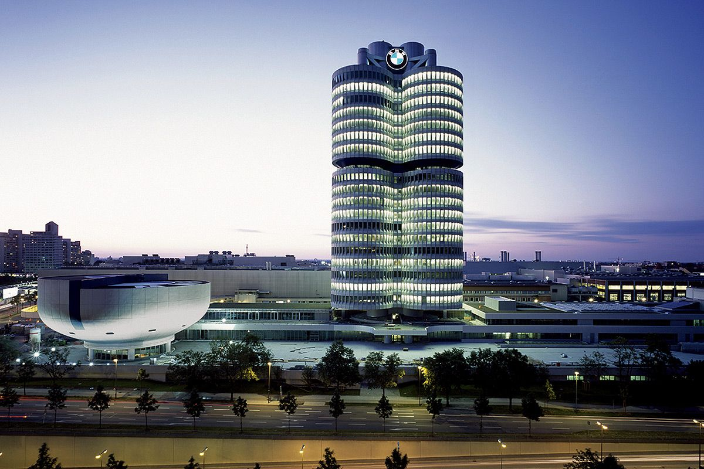

WHERE IS MUNICH?
뮌헨은 독일 남부 바이에른 주 오버바이에른현의 도시입니다.
뮌헨은 바이에른주의 최대 도시이자 주도며 수도인 베를린과 함부르크에 이어 독일 제 3의 도시입니다.
뮌헨이라는 도시명의 유래는 옛 고산지대 독일어로 "수도자들의 공간(forum apud Munichen)"이라는 뜻에서 유래하였습니다.
이 도시를 건립한 자들은 베네딕토회 수도자들입니다. 그에 따라, 뮌헨의 휘장에는 수도자 그림이 새겨져 있습니다.
뮌헨의 시 고유색은 신성로마제국을 상징하는 흑색과 금색으로, 루트비히 4세 시절부터 채택하고 있습니다.
안정적인 경제와 사회제도, 낮은 범죄율로 뮌헨은 독일에서 뿐만 아니라 세계에서도 살기 좋은 도시로 평가받습니다.
뮌헨에서는 세계적인 축제 중 하나인 옥토버페스트가 열리기도 합니다. 그만큼 맥주로도 유명한 도시이며, 세계적으로도 유명한 맥주인 파울라너가 뮌헨의 대표 맥주입니다.
경제 및 산업적인 측면에서도 매우 중요한 대도시며 독일에서 인구 1인당 소득이 가장 높은 도시입니다.
이는 제 2차 세계대전에서 독일이 패전 후 동서독 분단으로 동독이 공산화가 되자 그곳에 연고를 두고 있던 기업들이 대거 서독으로 이전했는데, 이때 가깝고 땅값도 낮았던 뮌헨으로 대거 옮겨오게 된 것 입니다.
아우디, BMW (자동차), 지멘스(전자), MAN(상용차), 오스람(전기), 로데&슈바어츠(전기), 린데(가스), 알리안츠(보험) 등 독일을 대표하는 제조, 금융 기업들의 본사가 위치 해 있습니다.
주요 관광지로 올림픽 공원, 알리안츠 아레나, 쿤스트아레알, 노이슈반슈타인 성 등이 있습니다.

△ 뮌헨에 위치한 BMW 본사
강원대학교 | 컴퓨터과학전공 | 201912437 | 권구성
웹프로그래밍 기말 프로젝트